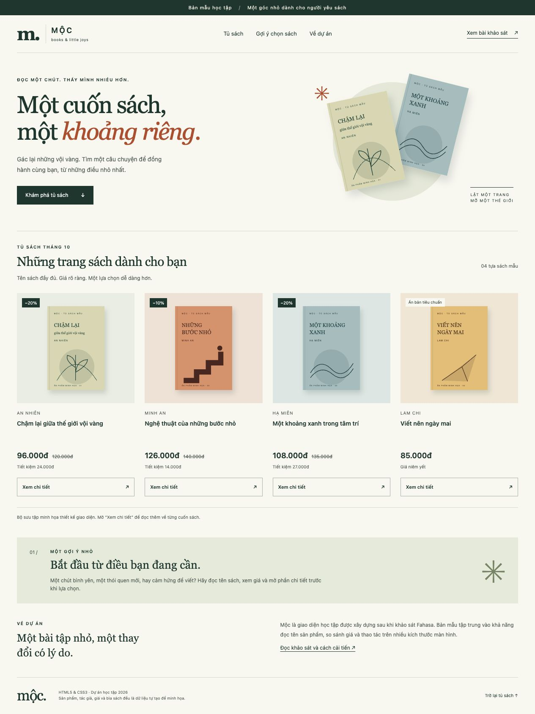
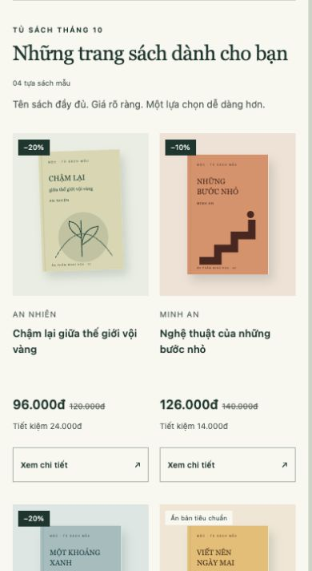
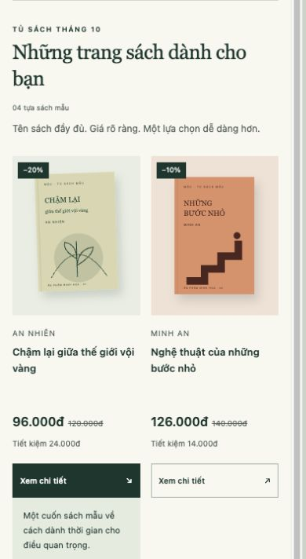

Biên bản kiểm tra
Ngày 20/10/2026 · Thực hiện bởi trợ lý AI trong trình duyệt. Không thay thế phần sinh viên tự chạy, sửa và giải thích.
1. Render và responsive
Dùng khung iframe có chiều rộng xác định để kích hoạt CSS media query, đo DOM trong trình duyệt và xem ảnh render. Đây là kiểm tra khung nhìn, chưa phải thử trên điện thoại vật lý.
| Khung đặt | Rộng nội dung / scrollWidth | Lưới | Kết quả |
|---|---|---|---|
| 320px | 305 / 305px; 15px được trình duyệt dùng cho thanh cuộn dọc của iframe | 1 cột | Không tràn ngang; 4 tên đầy đủ; ảnh tải đủ; 4 nút cao 44px. |
| 390px | 390 / 390px | 2 cột | Không tràn ngang; 4 tên đầy đủ; ảnh tải đủ; 4 nút cao 44px. |
| 768px | 768 / 768px | 4 cột | Không tràn ngang; 4 tên đầy đủ; ảnh tải đủ; 4 nút cao 44px. |
| 1440px | 1440 / 1440px | 4 cột | Không tràn ngang; 4 tên đầy đủ; ảnh tải đủ; 4 nút cao 44px. |
2. Tương tác và nội dung
- Đã mở/đóng chi tiết thẻ đầu tiên bằng chuột; trên bản 390px thấy mô tả và số trang 168.
- Đã thử Enter đóng và Space mở chi tiết trên bản desktop; trạng thái accessibility đổi collapsed/expanded.
- Liên kết điều hướng Tủ sách đưa đến đúng khu vực; liên kết báo cáo đã được kiểm tra đường dẫn.
- Bốn giá bán: 96.000đ, 126.000đ, 108.000đ, 85.000đ. Tỷ lệ giảm 20%, 10%, 20% khớp giá gốc; khoản tiết kiệm 24.000đ, 14.000đ, 27.000đ.
- CSS riêng, bốn SVG parse được, ảnh có alt; bản giao nộp không có JavaScript, thư viện hay backend.
3. Lỗi phát hiện và sửa bởi AI
Ảnh bìa ở phần giới thiệu có width CSS nhưng còn chiều cao HTML cố định 440px, khiến vùng ảnh và bóng đổ quá cao; khung hẹp 305px ghi nhận scrollWidth 318px. Thêm height:auto vào .hero-book. Đo lại thấy scrollWidth bằng 305px; quan sát lại bản desktop cho thấy bìa và bóng đổ nằm gọn trong phần giới thiệu.
Đây là điều chỉnh của AI trong quá trình làm. Người học vẫn cần tự phát hiện và sửa ít nhất một điểm riêng để đáp ứng yêu cầu của đề.
4. Ảnh kiểm tra



5. Giới hạn còn lại
- Chưa kiểm thử nhiều trình duyệt độc lập và điện thoại vật lý.
- Chưa thử nghiệm người dùng, đo khả năng đọc hoặc đo chuyển đổi.
- Không có chức năng mua hàng nên không kiểm thử giao dịch.
- Phần tự xác nhận và chỉnh sửa cá nhân của sinh viên còn để mở trong AI_USAGE.md.